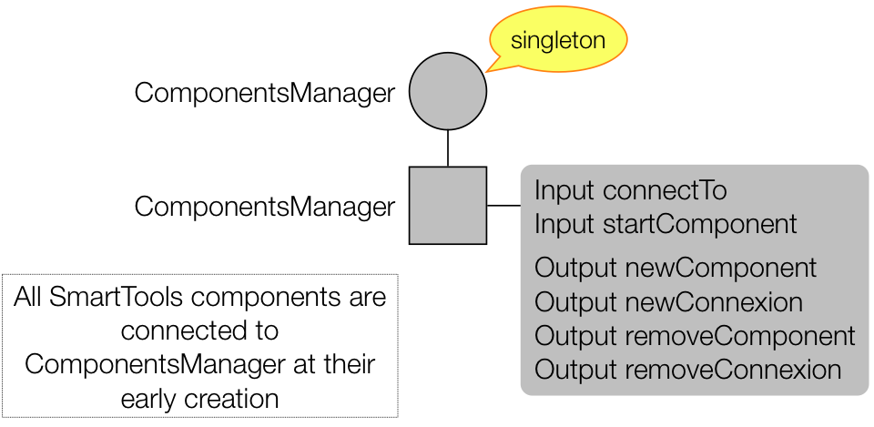
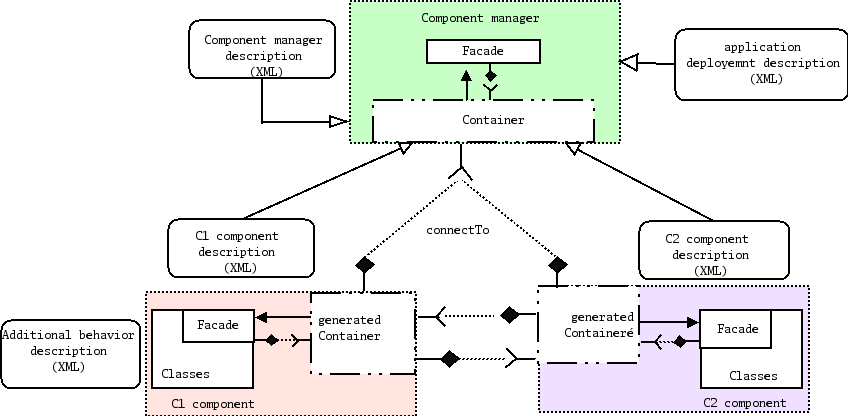
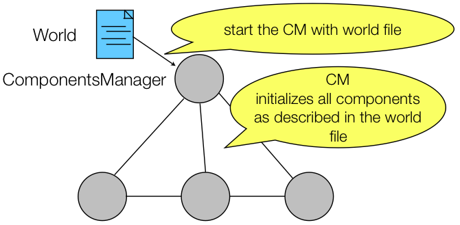

| inria.lognet.ds.pon | inria.smarttools.ds.local | ||
| inria.lognet.virtpipes | inria.smarttools.componentsmanager | Other components | |
| inria.smarttools.core | |||
| inria.pon.keyvaluestore | inria.smarttools.dynamic | ||
| inria.smarttools.lib | |||
| org.osgi.framework | |||

The ComponentsManager (CM) is the central component in SmartTools and PON for connecting and managing components.

Every local component is connected to the CM, so that a component can ask the CM to connect it to another component, from different sources (local or remote).
A source of components is represented by a DS, such as inria.smarttools.ds.local and inria.lognet.ds.pon for examples. You must provide one and only one local DS, such as inria.smarttools.ds.local. You can provide optionally a remote DS, such as inria.smarttools.ds.simpleudp, inria.smarttools.ds.simpletcp, inria.lognet.ds.pon.
The CM has a strategy to select which DS is better for connecting a local component to another component.
The CM is able to play a world file.
